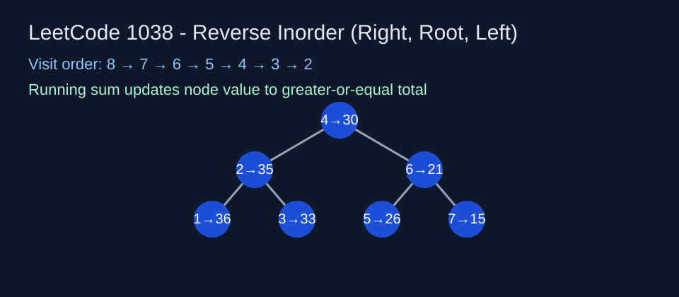

LeetCode 1038: Binary Search Tree to Greater Sum Tree (Reverse Inorder)
LeetCode 1038TreeDFSToday we solve LeetCode 1038 - Binary Search Tree to Greater Sum Tree.
Source: https://leetcode.com/problems/binary-search-tree-to-greater-sum-tree/

English
Problem Summary
Convert a BST so that every node value becomes the sum of all original values greater than or equal to it.
Key Insight
BST inorder is ascending, so reverse inorder (right, root, left) visits values from large to small. Keep a running sum; when visiting a node, add its value into sum and write sum back to node.
Complexity Analysis
Time: O(n), each node visited once. Space: O(h) recursion stack, where h is tree height.
Reference Implementations (Java / Go / C++ / Python / JavaScript)
class Solution { int sum = 0; public TreeNode bstToGst(TreeNode root) { dfs(root); return root; } private void dfs(TreeNode node) { if (node == null) return; dfs(node.right); sum += node.val; node.val = sum; dfs(node.left); } }func bstToGst(root *TreeNode) *TreeNode { sum := 0; var dfs func(*TreeNode); dfs = func(node *TreeNode) { if node == nil { return }; dfs(node.Right); sum += node.Val; node.Val = sum; dfs(node.Left) }; dfs(root); return root }class Solution { public: int sum = 0; TreeNode* bstToGst(TreeNode* root) { dfs(root); return root; } void dfs(TreeNode* node) { if (!node) return; dfs(node->right); sum += node->val; node->val = sum; dfs(node->left); } };class Solution:
def bstToGst(self, root: TreeNode) -> TreeNode:
s = 0
def dfs(node):
nonlocal s
if not node: return
dfs(node.right)
s += node.val
node.val = s
dfs(node.left)
dfs(root)
return rootvar bstToGst = function(root) { let sum = 0; const dfs = (node) => { if (!node) return; dfs(node.right); sum += node.val; node.val = sum; dfs(node.left); }; dfs(root); return root; };中文
题目概述
把 BST 改造成 Greater Sum Tree，使每个节点的新值等于原树中所有大于等于该节点值的总和。
核心思路
BST 的中序是升序，因此采用反中序遍历（右-根-左）即可按从大到小访问。维护一个前缀和 sum，访问节点时先累加，再回写节点。
复杂度分析
时间复杂度 O(n)，空间复杂度 O(h)（递归栈）。
多语言参考实现（Java / Go / C++ / Python / JavaScript）
class Solution { int sum = 0; public TreeNode bstToGst(TreeNode root) { dfs(root); return root; } private void dfs(TreeNode node) { if (node == null) return; dfs(node.right); sum += node.val; node.val = sum; dfs(node.left); } }func bstToGst(root *TreeNode) *TreeNode { sum := 0; var dfs func(*TreeNode); dfs = func(node *TreeNode) { if node == nil { return }; dfs(node.Right); sum += node.Val; node.Val = sum; dfs(node.Left) }; dfs(root); return root }class Solution { public: int sum = 0; TreeNode* bstToGst(TreeNode* root) { dfs(root); return root; } void dfs(TreeNode* node) { if (!node) return; dfs(node->right); sum += node->val; node->val = sum; dfs(node->left); } };class Solution:
def bstToGst(self, root: TreeNode) -> TreeNode:
s = 0
def dfs(node):
nonlocal s
if not node: return
dfs(node.right)
s += node.val
node.val = s
dfs(node.left)
dfs(root)
return rootvar bstToGst = function(root) { let sum = 0; const dfs = (node) => { if (!node) return; dfs(node.right); sum += node.val; node.val = sum; dfs(node.left); }; dfs(root); return root; };
Comments